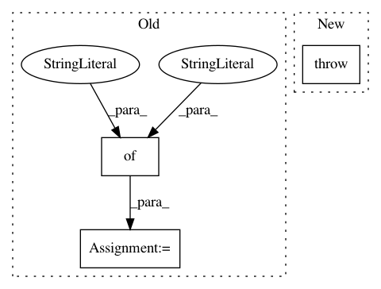

5752f1e9c1831e5e127f9ffb280c88559cdd5879,examples/multigoal.py,,run_experiment,#Any#Any#,17
Before Change
hidden_layer_sizes=(M, M),
reg=1e-3)
elif variant["policy"] == "real-nvp":
bijector_config = {
"num_coupling_layers": 2,
"hidden_layer_sizes": (M, ),
"use_batch_normalization": False,
}
policy = RealNVPPolicy(
input_shapes=(env.active_observation_shape, ),
output_shape=env.action_space.shape,
After Change
hidden_layer_sizes=(M, M),
reg=1e-3)
else:
raise NotImplementedError(variant["policy"])
plotter = QFPolicyPlotter(
Q=Qs[0],
policy=policy,
In pattern: SUPERPATTERN
Frequency: 3
Non-data size: 3
Instances
Project Name: rail-berkeley/softlearning
Commit Name: 5752f1e9c1831e5e127f9ffb280c88559cdd5879
Time: 2018-11-20
Author: hartikainen@berkeley.edu
File Name: examples/multigoal.py
Class Name:
Method Name: run_experiment
Project Name: rail-berkeley/softlearning
Commit Name: ca454c063d53d12ca94c9ed68ee16db79fbbd4a8
Time: 2018-05-22
Author: kristian.hartikainen@gmail.com
File Name: examples/mujoco_all_sac.py
Class Name:
Method Name: run_experiment
Project Name: rail-berkeley/softlearning
Commit Name: 1f6686d765052c874dcf28f8036acde742decd79
Time: 2019-04-26
Author: 31363575+Alacarter@users.noreply.github.com
File Name: softlearning/environments/utils.py
Class Name:
Method Name: